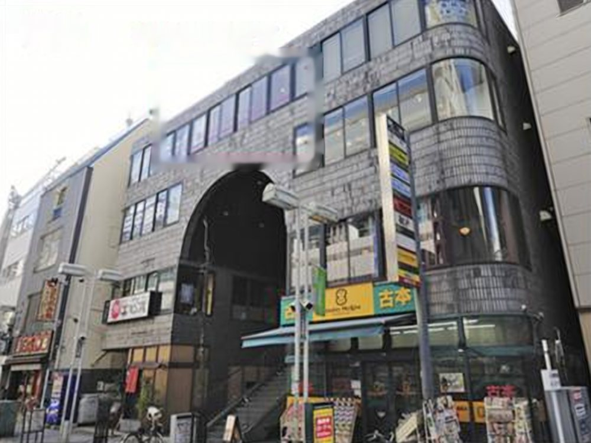

01
毎回、同じ医師が
診ます。
診ます。
完全主
お困りごとから
近い
初めての
ご予約は
STEP1
症状と
STEP2
来院後に
STEP3
いま起きている
当院の
01
完全主
02
人
03
わが
院長
川崎沼田クリニック院長の
こころの
人との
川崎沼田クリニック 院長沼田 真
よく
完全予
診察は
症状が
はい。
院長は
保険証を
完全予
診療時間
| 時間 | 月 | 火 | 水 | 木 | 金 | 土 | 日祝 |
|---|---|---|---|---|---|---|---|
| 9:30–12:30 | ● | ● | ● | ／ | ● | ◎ | ／ |
| 14:30–18:30 | ● | ● | ● | ／ | ● | ◎ | ／ |
お知らせ
院長コラム
アクセス
